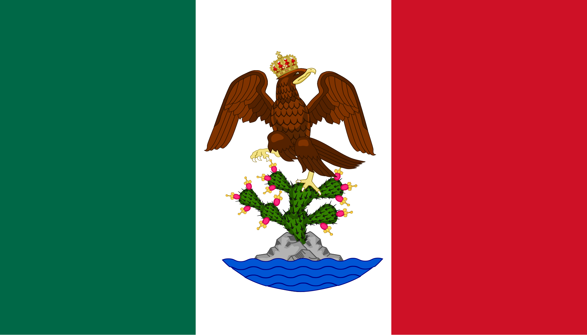

El Grito
El levantamiento original ocurrió en la madrugada del 16 de septiembre. La tradición de conmemorar el "Grito" la noche del 15 se popularizó a mediados del siglo XIX durante el gobierno de Porfirio Díaz (coincidiendo con su cumpleaños), manteniéndose hasta la actualidad.

El Estandarte de Guadalupe
Miguel Hidalgo no llevaba una bandera formal; tomó un óleo de la Virgen de Guadalupe del santuario de Atotonilco para usarlo como estandarte unificador del movimiento.

Juan Escutia
No existen registros documentales que confirmen que Juan Escutia se haya envuelto en la bandera nacional para tirarse al vacío desde el Castillo de Chapultepec; es una narrativa patriótica construida en el siglo XIX.

Chiles en Nogada
Platillo tradicional del mes patrio creado por las monjas agustinas del convento de Santa Mónica en Puebla para celebrar el santo de Agustín de Iturbide y la firma de los Tratados de Córdoba en 1821, luciendo los tres colores del Ejército Trigarante.

La verdadera Acta de Independencia
El acta firmada en 1821 declaraba el surgimiento del "Imperio Mexicano" y no de una república, ya que el plan inicial preveía una monarquía constitucional.